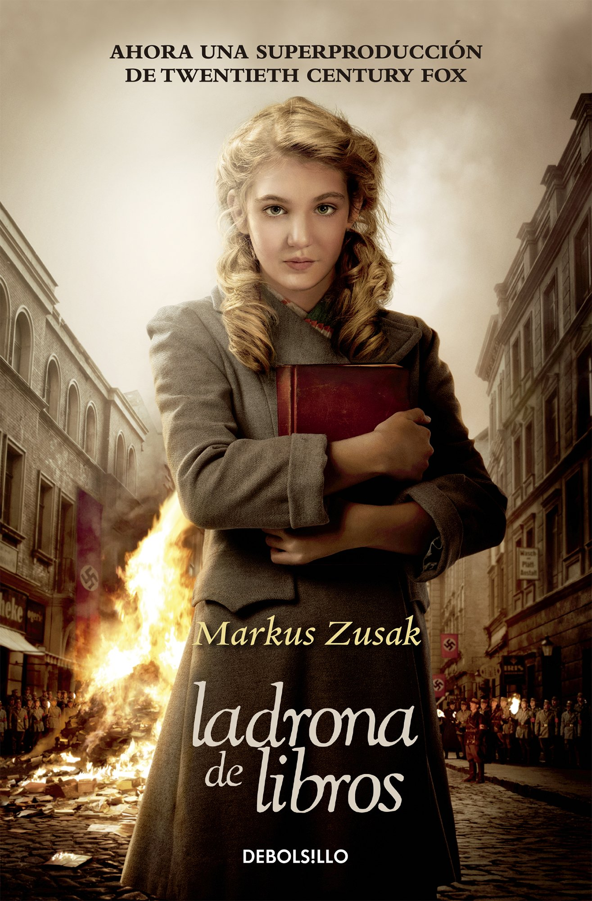
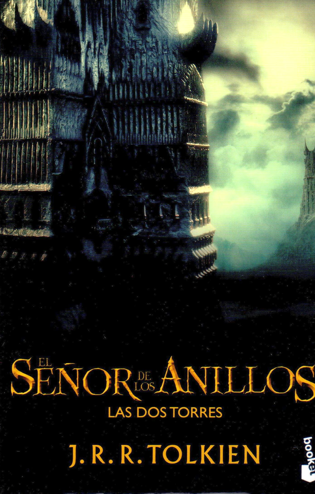

La ladrona de libros, novela narrada desde el punto de vista de la Muerte, nos presenta a Liesel Meminger, una niña de nueve años que se va a vivir con una familia adoptiva, compuesta por dos miembros, Hans y Rosa Hubermann, en un pueblo cercano a Múnich (Molching), en la Alemania anterior a la Segunda Guerra Mundial.
La Comunidad del Anillo es el primero de los tres volúmenes que forman la novela El Señor de los Anillos, secuela de El hobbit, del escritor británico J. R. R. Tolkien. La obra fue escrita para ser publicada en un solo tomo, pero debido a su longitud y coste, la editorial Allen & Unwin decidió dividirla.

Las dos torres es el segundo volumen de la novela de fantasía heroica El Señor de los Anillos, del escritor británico J. R. R. Tolkien. La Comunidad del Anillo precede a este volumen, y a su vez continúa en El retorno del Rey.
El retorno del Rey es el tercer volumen de la novela de fantasía heroica El Señor de los Anillos, del escritor británico J. R. R. Tolkien. Las dos torres es el volumen inmediatamente anterior a este volumen, y el primero de la serie es La Comunidad del Anillo.
Charlie tiene 15 años y se ha quedado solo tras el suicidio de su mejor amigo. Vive con sus padres, su popular y guapa hermana y un hermano mayor que es una estrella del fútbol americano y que está a punto de comenzar la universidad. Su profesor de lengua está convencido de que Charlie posee una gran capacidad intelectual. Tras conocer a Sam y Patrick empieza a comprender lo que es ser un adolescente, y comienza un viaje hacia la madurez que le llevará a recorrer caminos nuevos e inesperados. Con ellos descubre nueva música, empieza a beber, fumar y coquetear con drogas, cambia de amigos ¡Hasta que se convierte en un joven de verdad!